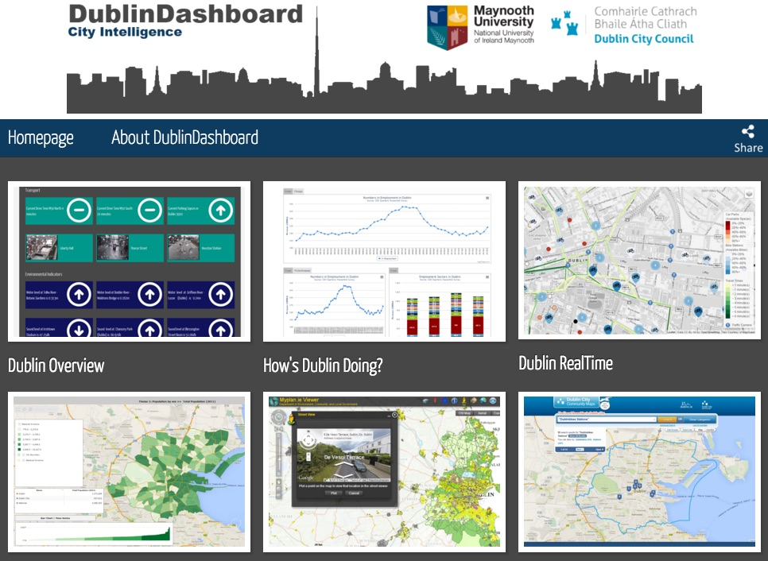
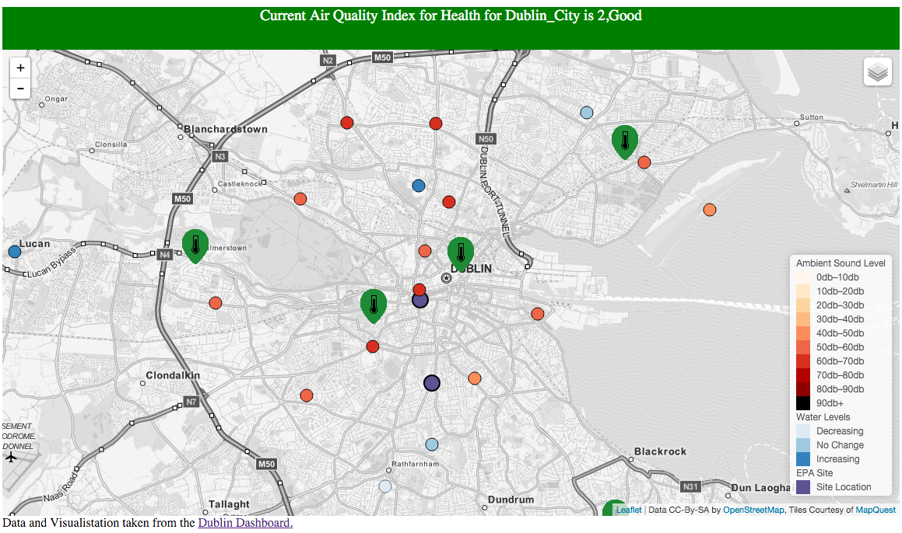

It was a warning of troubles ahead. In 2008, a 14-year-old Polish schoolboy hacked into the tram system in Łodz, Poland. For a lark, he reprogrammed a TV remote control to take command of the city’s track points. He proved to be a lousy driver: Four trams derailed, more than a dozen people were injured. And yet, there he was playing with the city’s transit system like it was a model train set.
Wanted: The Human City
Cities are getting bigger and smarter. Can we still live in them?
ERC researchers are on a quest to make our digitised mega-cities more liveable
by Scott Huler
Video taken from Luc Van Gool's research.
Since then, other urban hackings have made headlines around the world – highlighting how vulnerable our computerised infrastructure really is. Cities are getting bigger and bigger: by 2050, 82 per cent of Europe’s projected population of 581 million will be urban, according to the United Nations. And as cities grow, we keep adding technology: we’re sensing, filming, measuring, analysing, controlling our urban environments constantly. With everything connected to everything else, the city is a place not just of daily wonder but of possible crisis. Added to the routine problems of bad traffic, noise pollution, fouled air, lurking crime, the modern “smart” city starts to look pretty dumb – if not downright
Press the Button on the lower right corner or move the timeline to any chosen time. Click on the dots to get information abut the cities and display the topics you want in the top left menu.
This animation is done by PopulationEducation.org. Visit their project at worldpopulationhistory.org
Can we fix that?
Can our best minds – in urban planning, civil engineering, computer technology, sociology and other fields – find solutions? “We just can’t afford to say no”, says Debra Laefer, associate professor in the School of Civil, Structural and Environmental Engineering at University College Dublin. “We’re going to get two billion more people on the planet between now and 2050. And we know two-thirds of them are going to want to live in cities.”
Ludovic Leclerq, Research Director at The French Institute of Science and Technology in Transport, Planning and Networks agrees. “My idea is to provide tools for people to think of new ways of managing cities,” he says.
Leclerq and Laefer are among scores of scientists now applying their in-depth subject expertise to urban research projects funded by the European Research Council, one of Europe’s biggest frontier-research funders. Laefer has developed a new technique for aerial mapping of heritage buildings to help in avoiding damage when tunnelling below them for underground transport systems. Leclerq is laying the foundations for next-generation road traffic management systems that anticipate congestion, rather than reacting to it.
Other ERC-funded researchers are studying how nature builds ecosystems in a diminishing number of green spaces, new ways of modelling cities, and how, in addition to being a source of annoyance, traffic noise actually damages our health. This is blue-sky stuff; it won’t get the refuse collected in your neighbourhood tomorrow. But like all frontier research, it will eventually transform our lives – in this case, what it’s like to live in a big city.
Are you a criminal - yet?
Rob Kitchin, a professor in the National Institute of Regional and Spatial Analysis at Maynooth University, Ireland, and another ERC grantee, wants to know how software can express a city’s life – and how that life in turn is affected by the software: a virtuous, or vicious, feedback loop. For instance, can data collected by the police get you arrested for a crime you haven’t yet committed?
This is called “predictive policing” – and it’s not science fiction: New York City’s police commissioner recently called it “the reality of today.” Based on perfectly reasonable evidence - neighbourhood crime statistics, social media connections, for example - a person may seem statistically likely to commit a crime. With that information, the police or social workers can be pro-active and offer help or warnings. The problem, says Kitchin, is that “you don’t have evidence that this person has committed a crime … but you’re already treating them as a criminal.” And then what if the data get re-used by private companies? “Whether you get a job or a tenancy, or a loan or a mortgage, may be made on the back of this data.”
In another example Kitchin’s group has developed a cool app, the Dublin Dashboard, sharing virtually all the publicly available sensor-readings about the city. You can check the tides, temperature, shipping, river levels, oxygen and pollution levels, ambient noise, road traffic, parking spaces – even available bike-shares. Camera feeds yield images. Maps break down city population by topics like gender and density. “And all the data is open,” Kitchin says. “Everybody can go and build their own apps off this, or they can just look at it.”
It’s obviously useful, and kind of fun. But there is a serious side too, Kitchin says. “How does that translate into new forms of governance?” Atlanta has a purpose-built dashboard room, where city government meets weekly to assess metrics. Rio de Janeiro built an “urban operations centre” with data streams from 30 government agencies, to try to manage the potential chaos of the World Cup in 2014 and the Olympic Games happening there this year. Many cities have litter bins with sensors to signal when they’re full – meaning the garbage trucks can plot more efficient pick-up routes.
This information torrent is helpful to city managers, but does it really solve the problems people encounter in a city? It can lead managers, distracted by all the data, to focus on the wrong problems – what Kitchin calls “technological solutionism.” For instance, he says, with more data “you might be able to better manage homelessness, but you’re not going to stop people becoming homeless.”
 The Dublin Dashboard provides citizens, public sector workers and companies with real-time information, time-series indicator data, and interactive maps about all aspects of the city. Check the project at: http://www.dublindashboard.ie
Untangling the world’s worst traffic
Traffic jams are another unfortunate fact of city life. Leclerq is developing a new way to look at them. He is Professor of Traffic Flow Theory at Lyon University – and if you’re wondering why such a post exists, in February 1980, the Lyon-Paris Autoroute had one of the world’s longest recorded traffic jams - a full 175 kilometres - as thousands ended their Alpine ski holidays and headed back towards the capital, all on the same day.
But consider this case. Imagine a traveller from A to B in a city can take either a bus or a car. Now, imagine you get some people to switch from car to bus. There will be fewer cars on the road, so everybody – in both cars and busses - moves a bit faster. Everyone wins. But the people who selfishly refuse to switch to the bus win a bit more; their own route by car is more direct and without time-wasting bus stops. So, in real life, few people actually switch and the traffic remains horrible for all.
Most models of this today look at flow, treating the traffic as if it were water and the vehicles and people as though they were indistinguishable molecules in the stream. “My idea is to focus more on trips” the individual trajectories, Leclerq says.
He cites an MIT and Stanford study which used cellphone tracking, to show that if you randomly eliminate 1 per cent of journeys, you reduce congestion by 3 per cent. But if you’re smarter about it, cancelling or delaying trips by 1 per cent of drivers - but only in strategically chosen neighbourhoods - you can reduce congestion by 18 per cent. It’s common sense: if the route between the shops and the city hall is jammed, then focus traffic control on trips that take that route. But few cities have that kind of smart traffic management.
Leclerq hopes to speed things along, by finding general algorithms to determine which journeys cause the most congestion in a system. He cites the old 80-20 rule: focus on controlling the most troublesome 20 per cent of routes, to eliminate 80 per cent of the problem.
That’s hard, of course: hard to identify the type of travellers most clogging the roads, and harder still to get them to change course or vehicle. But with good data and modelling, traffic planners might “nudge” people to do the right thing for all – for instance, promise that if you take the boring bus to work on the days when you aren’t in a rush, then for the days when you have a can’t-be-late appointment you will get priority in the transport system and zip ahead of others. This may sound like wishful thinking now, but imagine how potent it could become when driverless vehicles enter the traffic mix, and their guidance systems connect to the city’s traffic controllers.
France’s hellish 109-mile tailback
In the annals of congestion, the epic standstill of Lyon-Paris in 1980 takes some beating. Cooped up commuters went bumper-to-bumper for 109 miles, thanks to an artery clogging combination of vacationers heading home and inclement weather.
Truly blood-boiling gridlock – but somehow not the worst ever. In Houston in 2005, mired motorists were trapped in their cars for 48 hours during a 100 mile-plus traffic. In 2013 Sao Paulo, drivers were ensnared in a 192 mile jam while the 2010 holdup on the Beijing-Tibet expressway lasted an eye-watering 12 days.
Are they digging under your house?
Another way to manage traffic is to make mass transit more appealing, by extending underground lines with more stations and trains. London, for instance, expects Underground traffic to soar to 230 million journeys a year from 136 million in 2014, and is planning more line extensions to cope (read London's plan here). But digging tunnels in centuries-old cities isn’t easy. For starters, the tunnellers can damage the fragile old buildings above them. Laefer is trying to get around that problem.
The idea for her project stemmed from a visit to the 9/11 wreckage in New York. “What I saw did not match some of the traditional blast literature” about how buildings collapse, she says. “I thought, wow, it would be good to have a 3D model of this and do some of that blast modelling.” But good data for such models are hard to get. When London built the Jubilee Line in the 1990s, she says, it spent about half a billion pounds analysing and monitoring the tunnel route – yet still there was lots of damage to the buildings above, and lots of lawsuits. A key problem: the city’s architectural plans usually aren’t good enough to predict which buildings are weak and need underpinning. Of course, you could inspect the buildings in advance – but when Laefer tried that four years ago in Dublin, which is planning the first underground line for its tram system, just six of the 200 owners contacted gave permission.
So now she takes to the sky, using helicopters – and soon drones – to survey buildings from above. They hang LiDAR (Light Detection and Ranging), sensors from the aircraft. This technology is often used in agricultural or forest surveys, pointing the cameras straight down from above; but with Laefer’s group the sensors fly low and swing like pendulums to see the buildings’ facades, rather than roofs. What kind of materials are the buildings made from? How big and numerous are the windows? (A building with lots of windows is usually more flexible.) How thick are the walls? It’s all in the sensor data. But it takes vast computing power to make sense of it all.
“My group is taking a complete data-driven approach,” she says. “What is there in the data? How do we reconstruct our urban environment from that?”
Making models that work
Indeed, city models are now a major blue-sky research field around the world. That’s important for urban planners, but is also of interest to video game developers, the movie industry and others. Luc Van Gool, professor of computer visions at ETH-Zurich, is trying to find a better way to create these models.
His idea: Most models use mathematical “point clouds” of data to represent buildings or neighbourhoods – and then the computer manipulates them as you change or move through the scene. But Van Gool works with images taken by a sort of Google Street View-style mobile mapping van, adds in images of landmarks and the torrent of information coming in from every website and traffic modelling app. Then his system, still in development, will automatically analyse the images, noting the number of storeys in a building, the shadows cast, the position of traffic signs, the vegetation - and dynamically reconstruct that information to create a living, three-dimensional model of the city.
“Everything is based on cheap sensors in quantity,” he says. You can use it for animation, plotting travel routes, virtually visiting Times Square or visualising the Eiffel Tower at night when you’re there in the daytime. Van Gool is aiming for a model that’s fast, cheap and uses real city data. “It’s no good having a 3D ghost town, when there’s nothing alive inside,” he says.
Can you debate with Big Brother?
Then there’s the dark side of data in a city. How citizens deal with it interests Jennifer Gabrys, reader in the Department of Sociology at Goldsmiths, University of London. If you combine the growing number of sensors in the city with the growing number of smartphones, you have a real privacy problem, according to a recent Irish government report. In London, when a private company began installing phone-sniffing sensors on litter bins, in one week it collected data on 4 million phones and their owners, as they passed by the bins – and then it wanted to sell the data to advertisers and others. In the ensuing flap, the city banned it. But what other forms of privacy invasion go unremarked?
“There are sensors monitoring the flow of people through every space on the Underground, on escalators, sensors increasingly in energy systems, sensors measuring air pollution, traffic flows, CCTV cameras,” Gabrys said “And a lot of the sensors and sensor systems are not necessarily going through processes where citizens are consulted or involved. That’s raised concerns about the extent to which people will be left out of those processes.”
She is trying to redress that balance in her ERC-funded project ‘Citizen Sense’, which is looking at smart-cities “sales pitches” by companies like Cisco, IBM, and Intel, investigating the degree to which the citizens themselves are involved in the planning, and trying to educate people about the sensors. So for example, the project holds walks through London to visit air quality monitoring stations and learn about pollutants and how they are monitored. The thinking is that if more citizens are aware of the sensors – especially on a public-health issue like air pollution – it might change how air-quality policy is developed. People would start to associate certain data with certain experiences: headaches, nausea, burning eyes, and so on. “The sensors became a way to create another kind of evidence [citizens] could point to that might be taken more seriously by regulators,” Gabrys says.
It’s all part of her general interest in how cities and their citizens interact as the cities become smarter. “It’s still an imagining of what the city could be like,” she says.
Visiting the lab on your street corner
Matthew Gandy, professor of geography at Cambridge University (formerly at University College London’s Urban Laboratory), would like to imagine a greener city. Green space is a major factor in how liveable a city feels. And the degree of greenness can vary hugely by city: Birmingham, UK, has just 11 per cent of its area occupied by parks, trees and other green areas, while Stockholm has 39 per cent.
“I’m interested not just in the designed natures of the city - parks, gardens, tree-lined avenues and so on - but the spontaneous nature in cities. The extraordinary biodiversity you get in wastelands, or marginal spaces, has fascinated me for a long time,” Gandy says.
His ERC-funded project , ‘Rethinking Urban Nature (RUN)’, aims to develop innovative methods for understanding how nature develops and thrives in our cities. In one of his focus cities, Berlin, he invited a botanist to come see a small plot of land used as a car park. “She was very enthusiastic to point out all of these different plants from all over the world,” he says. Not enough city-dwellers look at what’s on their doorstep, Gandy laments. “Too much contact with nature is at a distance,” on TV or the Internet.
That affects policy: people don’t speak up enough. “If we don’t get exciting debates about nature happening in cities, it’s really hard to think of how you can put together a global vision for the future of nature.”
So he looks at the green areas you don’t normally notice: the strips of land along railroads or canals, the spaces left by the wartime destruction in Europe, or the demilitarised space between North and South Korea and the former no-man’s land running around West Berlin. “With the fall of the Berlin Wall you had this interesting grid of abandoned security spaces that became interesting spaces of nature as well,” Gandy says. Compared with the monocultures of agricultural land and forestry plantations that ring cities, these wastelands are often far more unpredictable and interesting. “Every plot tells a story about the relationship between the city and its wider historic or global context.”
Through his eyes as a researcher, “Even the most mundane street corner becomes a scientific laboratory.”
Profiles of the researchers:

Bastian Leibe

Bastian Leibe leads a European Research Council starting grant for the project, “Computer Vision for Scene Understanding from a first-person Perspective (CV-Super)”. The research looks to develop computers which see and understand what humans see when they navigate their way through busy inner-city locations.

Debra Laefer
Prof. Laefer received her ERC grant in 2012 to rethink how tunnel-induced risk is predicted for above ground structures. This topic has deeply extended her work in laser scanning, data indexing, and the automatic generation of city-scale computational models.
read more
Jennifer Gabrys

Jennifer is Principal Investigator on the European Research Council
(ERC) project, “Citizen Sense”. Her research investigates environments,
material processes and communication technologies through theoretical
and practice-based work.
read more

Luc Van Gool
Prof. Luc Van Gool is principal investigator of the VarCity project and professor for computer vision at the Swiss Federal Institute of Technology (ETH), Zurich, Switzerland and University of Leuven, Belgium. His research interests include image understanding and recognition, procedural modeling of cities, texture synthesis, image retrieval, 3D reconstruction, robot vision and cultural heritage.
Ludovic Leclercq

Ludovic Leclercq is research director at IFSTTAR. In 2015, he was awarded a European Research Council consolidator grant for a project entitled “A Multiscale and Multimodal Modelling Approach for Green Urban Traffic Management (MAGnUM)”. His research covers dynamic traffic modeling and the related environmental externalities.

Matthew Gandy
Matthew Gandy leads a European Research Council advanced grant project, “Rethinking Urban Nature”. Gandy explores three themes: how cities function and the ecological dynamics of urban space, bodies are connected to urban space and cities and landscapes are represented in moving images.
read more
Mette Sørensen

Mette Sørensen is a senior scientist at Cancer.dk. She leads a European Research Council starting grant project, “Health consequences of noise exposure from road traffic to establish (QUIET)”. She studies the health effects of traffic noise on fertility, birth weight, cognitive performance, infections, cancer and cancer survival.

Rob Kitchins
Rob Kitchin is the principal investigator on the European Research Council advanced grant “The Programmable City” project. His research looks at how software is changing the infrastructure, management and governance of urban societies.
Tiziana Rossetto

Tiziana Rossetto, from University College London, is the Principal Investigator on the European Research Council (ERC) project "Urban Waves: evaluating structure vulnerability to tsunami and earthquakes, (URBANWAVES). She studies the effects of tsunamis on coastal infrastructures.
Sources
Looping video byLuc Van Gool's.
Pictures by DublinDasboard.ie..
Interactive by Populationeducation.org.
Video by Ina.fr